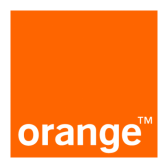
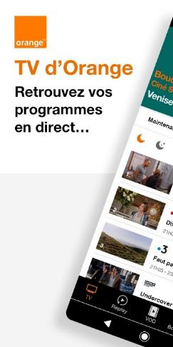
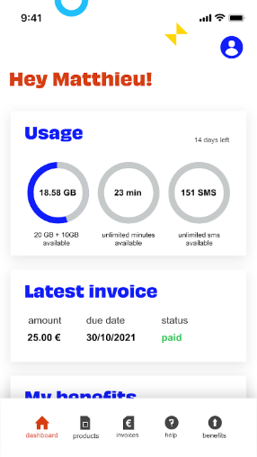

Contexte
Un pilote pour structurer l'écoconception applicative au sein du Groupe
Contexte
Orange Innovation souhaitait choisir un outil permettant d'accompagner l'écoconception des applications afin de contribuer à la décarbonation.
Le pilote a été porté par le programme « Digital Responsable » et une équipe d'Orange Pologne du CEC Software Quality.
L'expérimentation a été menée sur deux applications très différentes :
- MyHey, application belge de mCare ;
- TV d'Orange, application de vidéo à la demande et de streaming.

Résultats
Une prestation interne pour accompagner les entités du Groupe
Résultats
- Les experts sont convaincus par l'approche et les résultats obtenus.
- Orange Innovation met en place une prestation interne pour accompagner les différentes entités du Groupe sur l'écoconception des applications.
- Les analyses Greenspector sont utilisées comme support concret de sensibilisation du management et des équipes.
Clés du succès
Ce qui a fait la différence
Un travail collaboratif entre centres d'expertise
Le projet a bénéficié de la contribution des Centres d'Expertise Corporate « Software Ecodesign » et « Software Quality ».
Un pilote sur deux applications très différentes
Le pilote a été réalisé sur deux applications aux contextes techniques et métiers très différents, afin de vérifier la pertinence de l'approche dans plusieurs situations.
Une équipe déjà aguerrie aux outils de test
L'équipe utilisatrice disposait déjà d'une forte expérience des outils de test et de performance, ce qui a facilité l'appropriation de la démarche.
Des analyses concrètes pour sensibiliser
Les résultats Greenspector servent de support de sensibilisation auprès du management et des équipes, notamment dans le cadre des CX Reviews.
Témoignages
Ce qu'en disent les équipes
« Le POC Greenspector sur l'application Orange TV a permis d'établir un diagnostic précis de son fonctionnement et de son impact environnemental. Il permet de créer une base de référence, d'identifier les points d'amélioration et d'orienter les futures mises à jour de l'application. En résumé, ce test est un jalon essentiel dans la démarche d'optimisation de l'application. »
« Un outil de sensibilisation du management et des équipes avec du concret. Les analyses Greenspector sont utilisées dans le cadre des CX Reviews pour illustrer concrètement le positionnement des applications vis-à-vis des engagements environnementaux d'Orange. »
Visuels
Le projet en images

À vous de jouer
Vous souhaitez accompagner l'écoconception de vos applications à grande échelle ?
À vous de jouer